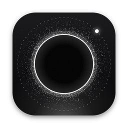

[ PAUSE ]
Come back to
your body.
A tiny menu bar app. Every 30–60 minutes, a 5-second cue floats over any app — drop your shoulders, unclench your jaw, take a long exhale — then fades. No clicks, never steals focus.
FIRST LAUNCH
Pause isn't code-signed yet, so your system asks once.
Mac: drag Pause to Applications and open it. If macOS says it can't verify the developer, go to System Settings → Privacy & Security and click Open Anyway.
Windows: if you see "Windows protected your PC", click More info → Run anyway.